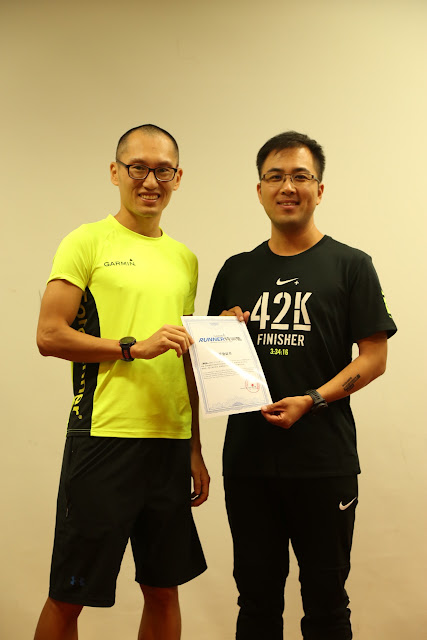
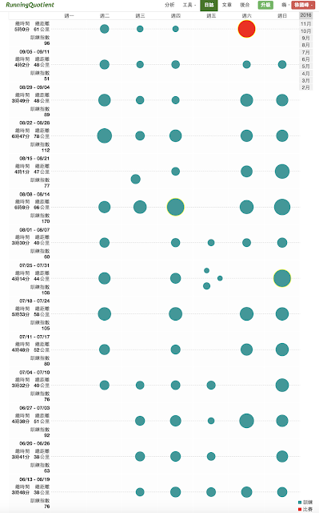
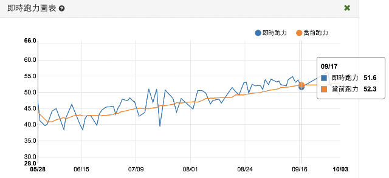
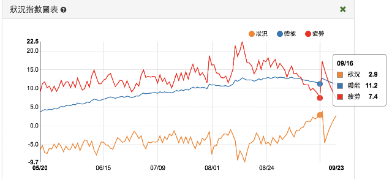
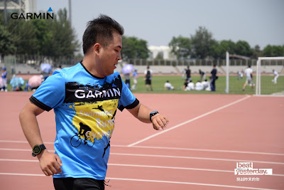
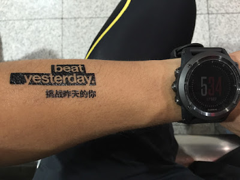
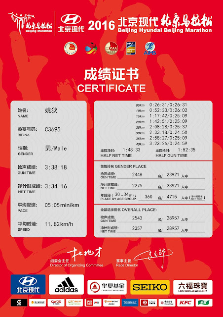

完美的週期化訓練圖表範例：4:23→3:34
今年是第一次在北京開設訓練營，其中有一位學員從 5/29 開始訓練後，一直到 9/17 北京馬拉松比賽前，沒有任何一次缺課。他在給我的信中寫道：「親愛的國峰教練，訓練營如今已圓滿結束，我可以驕傲和自豪的說，四個月的訓練週期，我完成了全部的跑步訓練計畫，沒有缺席任何一堂訓練課程，共計完成了 83 堂，訓練營期間累計奔跑里程 852 公里。這些，也都成為奠定我成績進步的重要基礎之一，沒有這些穩固的基礎，就沒有最後成績的順理成章。」
他是姚狄，下面是我在結營會上和這位認真跑者的合照：

這 852 公里，是在這十六週內依週期化的邏輯跑完的：
- 平均每週跑 48 公里，週跑量依序為：
- 45→49→38→38→51→40→52→58→44→40→66→47→78→48→48→18 公里
- 最後一週扣掉了北京馬拉松的里程數
- 平均每週 RQ 的訓練指數為 84 點，每週依序為：
- 77→89→76→63→92→76→80→105→108→60→170→77→112→89→51→21 點
- 最後一週扣掉了北京馬拉松的訓練指數
下圖是姚狄在RQ上的訓練日誌大綱，藍點分佈得非常均勻，這可是完全依照我的課表最後跑出來的訓練指數分佈圖，點愈大，代表訓練壓力愈大，可以看到從最下方的訓練一開始點都很小，到中期最大，接著在比賽前又逐漸縮小：

原本剛開始訓練時的RQ跑力是 41，9 月中時已提升到 51.6，這是非常顯著的進步。他的進步非常穩定，從RQ的分析圖可以看得出來，當前跑力一路上漲，簡直像前景看好的績優股一樣。

幾乎每個認真吃課表的學員，最後的狀況指數圖表都長成同一個模樣，就跟教科書裡的示範圖例一樣完美：

體能指數(藍線)一路上升，從一開始的 4，爬升到比賽前的 11.2；狀況指數(橙線)都在-5 上下振盪，唯有在比賽前一路飆上正值，來到+2.9。這就像在水中潛伏的游魚，養精蓄銳，抓準時機，一躍而上。
但要畫出這上述這些完美的線條，需要多少堅持與努力才行啊！！姚狄的來信中清楚寫下：
「為了保證訓練效果，我每天緊盯天氣預報，為了躲避高溫與酷暑，有時最早清晨 4:30 起床，有時夜晚等氣溫稍微降低了再出門，有時訓練結束已經 23:30。在面對這階段痛苦且難熬的訓練任務時，真的是咬牙在堅持，在跑課表時經常是用倒計時的方式告誡自己， 一遍遍的抬手看手錶，究竟還剩下幾分鐘，一遍遍的給自己打氣，都已經流下那麼多的汗水，怎麼忍心現在放棄。就這樣，堅持再堅持，完成了一個又一個訓練任務 。」
下面是姚狄寫下的四個月訓練感受：

四個月的訓練週期很長，如果拋開跑步本身，而只說訓練任務的話，已經不是靠興趣主動去完成，更多是靠毅力去拼。從四個週期整體上來講，國峰教練的設計是科學合理的，訓練量循序漸進，訓練方法穩中有升。雖然有時候訓練量大很累，但馬上就會迎來減量週，讓跑步技術得到提升的同時，也能讓身體及時得到恢復。基礎期主要打牢基礎，要耐得住性子，即便認為之前自己本可以跑更快，也要穩住腳步，穩紮穩打；進展期迎來間歇跑，在每一次短衝中尋找快感，讓人透徹心扉；巔峰期猶如名字一樣印象深刻，無論訓練課程還是所得成果，均走向了階段性的跑步巔峰；競賽期重在適應與調整，以最好的狀態迎接四個月的大考。
這四個週期當中，最刻骨銘心的當屬巔峰期，訓練量和強度迎來最大，這個週期給我最大的感受，就是當你臨近極限的時候，在思想上痛不欲生，想立刻結束；在行動上，卻不捨得停下腳步，心中默念再堅持一下，一定要咬牙熬過去。直到聽到手錶結束任務的提示音響起，才舒一口氣，如釋重負，放慢腳步，隨即帶來的那種緩釋感和征服感，絕對痛快；那種通過努力和汗水換回的成就感，絕對美妙，只有跑過才會懂得和體會。就這樣，我完成了一個又一個訓練計畫，翻過了一座又一座心中的大山，站在高崗上，俯瞰廣袤大地，那一刻，我就是內心中自己的英雄！
儘管巔峰期的訓練是痛苦的，但整個訓練週期，因為將跑步數據得以量化，整個過程還是有趣的。Garmin Connect、佳速度、RunningQuotient，讓你的跑步過程不再孤單，可以參照量化分析數據，從而改進下一次跑步動態。通過國峰教練所教授的姿勢跑法，結合第二代跑步動態數據，我的各項數值較比入營前均有明顯改善，雖然個別數據沒有達到理想目標，但這些工具，提供給了我一個不斷修正、不斷完善、不斷優化的有益參考和參照依據。這幾項工具當中，國峰教練領銜開發的 RunningQuotient 簡直太神奇了，他通過與 Garmin Connect 數據的聯通，解讀並分析每一次跑步數據，得出當前跑力、狀況指數圖表、各強度配速表、訓練指數、平均心率、各強度移動參數表、各強度觸地時間表、各強度步頻表、各距離最佳成績等指標，對我日常跑步訓練起到了極大的促進作用。我入營時通過 T20 測得的當前跑力為 41，北馬前的跑力 52，整個訓練週期提升 11 個點值；最大攝氧量從入營的 48 提升到北馬前的 57，提升 9 個點值。這期間，我不斷的刷新著我的各公里數 PB，同時可以參考各距離最佳成績所列的數據，並努力向這個目標衝擊，通過訓練營科學訓練方法所獲得的進步是突飛猛進的。

訓練營雖然是以 2016 北京馬拉松為目標，但更寶貴的財富，是這四個月當中的整個過程和經歷，我們所認識的全新的跑步理念，學到的科學訓練知識，養成良好的訓練習慣，國峰教練所傳達給我們的哲學辯證思維，以及可以受用終生的跑步工具。記得最後一堂賽前分享會上，國峰教練並沒有更多的將跑步技術和北馬策略放在講授重點，而是更多闡釋了跑步的真諦：“你跑步的時候，覺著自由嗎？你的目標是什麼？成為一位自由、認真、謹慎但不嚴肅的跑者。不要想著重點，也不要去預測成績，好好享受跑步的過程。”在四個月的訓練週期內，我聽從了國峰教練關於跑步的全部指導意見，記得在北馬前夜，我很糾結，思索了很久。國峰教練教導我們放下所有的目標，好好享受跑步的過程。雖然，我有很多的期盼，看著 RQ 對應跑力值同級別最好成績，讓我充滿嚮往。雖然，我有很大的目標，我不僅想破四，按照 RQ 跑力值我更想突破 330。但是，已經遵從了國峰教練整個夏天，還差最後這一次嗎？於是，我還是記住了國峰教練這最後一次建議，摒除雜念，不設定目標，去享受跑步的過程。相信國峰，沒錯的！
姚狄寫的北京馬拉松小記：
就這樣，我放下了心中所有的壓力和顧慮，整理了思緒，沉著冷靜地踏上了 2016 北馬賽道。出發前，我沒有過多的興奮，也無暇合影拍照、跟跑友寒暄溫暖的心情，在槍聲 4 分 2 秒後，我淡定出發了。路過天安門廣場，照舊在心底向她致敬，這是國家的標誌，首都的絕對榮耀。剛出發時防止過度興奮，故意壓低著配速，一路上，告誡自己，要放空思想，忘掉目標，手錶這是參考的一個工具，更多要在乎自身的感受。一路上，第一次更多關注賽道上的風景，路旁的地標性建築，路過好幾波跑友，以及 Garmin 的小夥伴，紛紛跟他們打招呼並打氣鼓勵，但我並沒有因此放慢或者停下腳步，跑步要跑出自己的節奏，只願隨心奔跑，專心享受這場四個月的終極盛宴。
過了 10K，身體狀態良好，瞄了一眼手錶，心率區間大概在 1.7，適當加速；大概 8.5K 的時候，配速發生漂移，少了 500m 的距離，配速到了 350，當時就想起了國峰教練告誡如果全程盯著配速看不一定準的事情，此處得到了應驗。過了半程，心率區間大概 2.0，保持速度，捨不得更多在水站停留，也不貪戀補給站的美食，就連 Garmin31K 的私補站，也只是跟小夥伴們打個招呼，腳步卻未停留，保持原速度快速通過。
過了 35K，明顯感覺到累了，告誡自己，終於到了一半距離，真正的考驗剛剛開始，一定要挺住，心率區間大概 2.4。看完這個數據後，心裡很欣慰，沒有更多依靠手錶，而是憑著感覺跑，心率區間與國峰教練在最後一堂分享課上建議的破四心率策略基本一致，在心底，對國峰教練由衷的感到敬佩，這種預期數據與實際結果的吻合與一致，來源他多少日常大量的數據研究，從而才能夠足以支撐，這絕對是嚴謹的學者氣質！
在這種情況下，我心裡有底了，配速與步頻不降低的情況下，依然保持著原有速度前進。最後 2K 左右，是最痛苦的時候，看看表，破四毫無懸念，破 330 卻無望了，好想放縱的走回去，但是，在我對待全馬的概念中，如果是靠走的完成的，即便是完賽，那也不是完整的馬拉松。於是，我腦海裡想起了國峰教練最後兩公里的建議，不再管表上的數據和心率，還有餘力，那就把所有力氣都使出來！於是，便以 T 配速的感覺，進行了最後的衝刺。衝過終點時，沒有預期的熱淚盈眶，沒有預想的興奮大叫，相反，內心很平靜，按停了手錶，淡定的繼續向前走，直接領取了完賽包，並向志願者的辛勤付出道了聲謝謝，我想，這也算是走向成熟跑者的一個標誌吧。最後，我的北馬淨時間為 3 小時 34 分 16 秒，刷新 PB 快 50 分鐘，位列 Garmin 北馬破四訓練營佳速度榜單第 5 名。
一切的付出都是值得的，一切的汗水都化作回報，一切的努力都被世界溫柔相待。最終的成績，只是這四個月艱辛訓練的一個結果而已，而更重要的，是這期間的過程。通過訓練營，我再一次踐行了自己的人生信條：要麼不做，要做，就要傾心盡力，做最好的自己。這四個月當中，我聽從國峰教練每一項意見，放棄了可能影響訓練效果的絕大部分跑步賽事，包括我的家鄉首馬 2016 哈爾濱國際馬拉松賽。只要付出，就有回報，這四個月，得到了最好的驗證。
Garmin 北京馬拉松破四訓練營
姚狄
==
附表一：個人馬拉松完賽情況統計表
日期 | 賽事 | 完賽淨時間 | PB | 備註
---|---|---|---|---
2015-09-20 | 2015 北京馬拉松 | 4:35:58 | - | 首馬
2015-11-08 | 2015 上海國際馬拉松賽 | 4:25:14 | PB10:44 |
2016-03-20 | 2016 無錫國際馬拉松賽 | 4:23:53 | PB1:21 |
2016-05-15 | 2016 天津國際馬拉松賽 | 4:29:27 | +5:34 | 按 430 兔配速跑
2016-09-17 | 2016 北京馬拉松 | 3:34:16 | PB49:37 |
附表二：個人完賽馬拉松關鍵性跑步數據指標對比表
賽事 | 平均心率 | 平均步頻 | 平均步幅 | 平均配速
---|---|---|---|---
2015 北京馬拉松 | 162 | 161 | 0.96 | 6:28
2015 上海國際馬拉松賽 | 159 | 161 | 1.00 | 6:14
2016 無錫國際馬拉松賽 | 160 | 162 | 0.99 | 6:12
2016 天津國際馬拉松賽 | 161 | 161 | 0.98 | 6:21
2016 北京馬拉松 | 159▲ | 180▲ | 1.13▲ | 4:57▲
備註：因前四個馬拉松佩戴 Garmin 225 光電心率錶，無第二代跑步數據可對比參照，故此處未列。本表數據均來源於 Garmin Connect。
